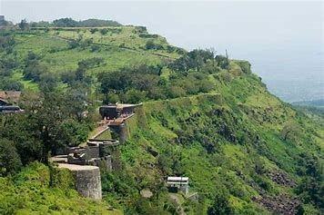

Panhala Fort
Panhala Fort, also known as Panhala Gad, is a significant fort located in the Panhala region of Maharashtra, India. It is one of the largest forts in the Deccan region and played a crucial role in the history of the Maratha Empire. Here are some key details about Panhala Fort:
History
- Built By: The fort was initially built by the Shilahara dynasty in the late 12th century and later fortified by various rulers including the Marathas.
- Significance: Panhala Fort was a key center of the Maratha Empire, especially during the reign of Shivaji Maharaj. It was the site of several important battles and has a rich historical legacy.
Architecture
- Design: The fort complex includes several notable structures such as the Sajja Kothi, Andhar Bavadi, Ambarkhana, and Dharma Kothi. The fort is known for its strategic design and robust construction.
- Notable Structures: Key attractions within the fort include the Teen Darwaza, Rajdindi Bastion, and the hidden well called Andhar Bavadi.
Location
- Coordinates: 16.8120° N, 74.1056° E
- Elevation: The fort is situated at an elevation of about 845 meters (2,772 feet) above sea level, providing panoramic views of the surrounding region.
- Nearby Attractions: Panhala is located near Kolhapur, a city known for its cultural and historical significance. The Jyotiba Temple and Mahalaxmi Temple are also nearby.
Trekking
- Difficulty Level: The trek to Panhala Fort is considered easy to moderate, suitable for trekkers of all levels.
- Duration: It typically takes about 2-3 hours to explore the fort complex.
- Best Time to Visit: The best time to visit Panhala is during the monsoon and winter seasons (June to February) when the weather is pleasant and the surroundings are lush green.
Points of Interest
- Panoramic Views: From various points within the fort, visitors can enjoy stunning views of the Sahyadri mountain range and the surrounding countryside.
- Historic Structures: The fort houses several historic structures, including old palaces, granaries, and secret passageways that reflect its rich history.
Panhala Fort is not only a historical landmark but also a scenic destination for nature lovers and history buffs.